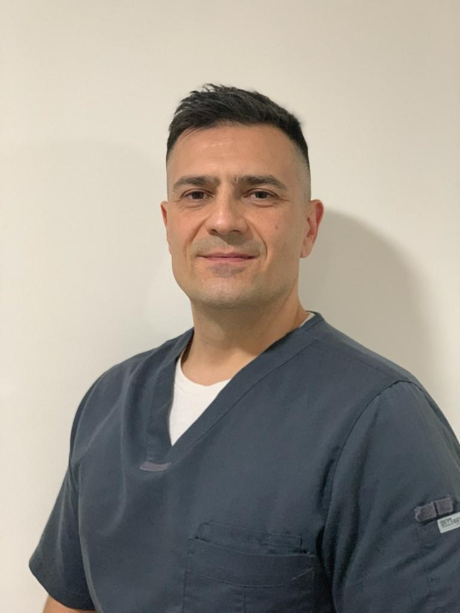

Carlos Sanchez, Médico Neurólogo
Formación Académica
- Universitarios: “Facultad de Ciencias Médicas-Universidad Nacional de Cuyo”.
- Título Universitario obtenido: Médico. Mes y año de egreso: 5 de octubre de 2010.
- Matrícula Provincial: 10767.
- Pos-Grado: Neurólogo desde 2016.
- Residencia Neurología Clínica Servicio Neurología/Neurocirugía, Hospital Luis C. Lagomaggiore, en la provincia de Mendoza.

Martin Ponce, R.NCS.T. Técnico en Electromiografías
Formación Académica
- Laboratorios Cadwell (Conducción Nerviosa, Potenciales Evocados Somatosensitivos, Kennewick, Washington, EEUU).
- American Association Of Electrodiagnostic Technologists (Técnico en Electromiografías, Kansas City, EEUU).
- R.NCS.T. Matrícula EEUU: 1054
- Medtrak VNG, INC. Technologist (Técnico en VideoNystagmography, estudio de Balance y Vértigo Postural, Las Vegas, Nevada, EEUU).
- Sociedad Argentina De Electroencefalografía y Neurofisiología Clínica (Curso anual de Electromiografía).